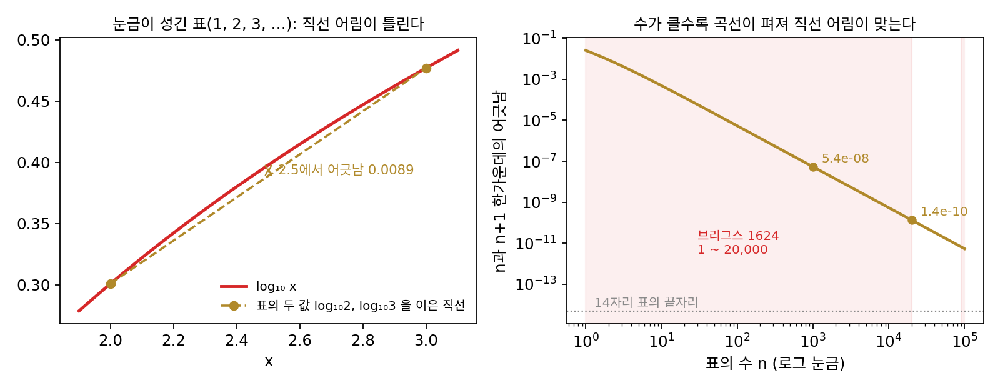
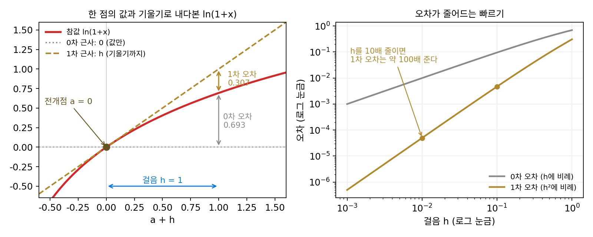
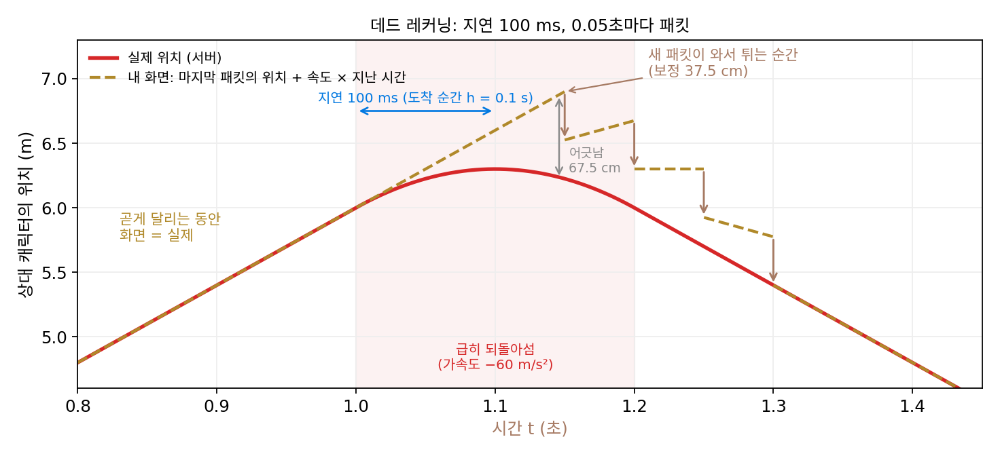
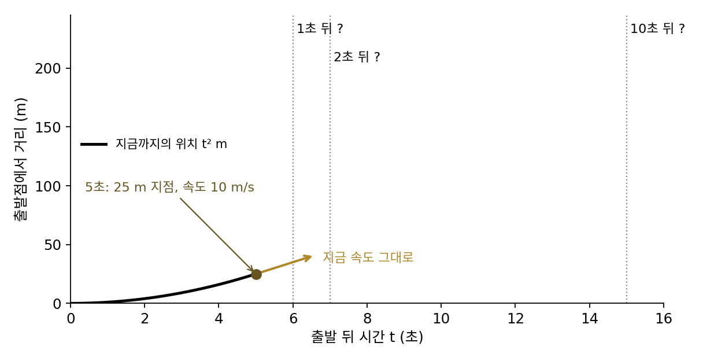
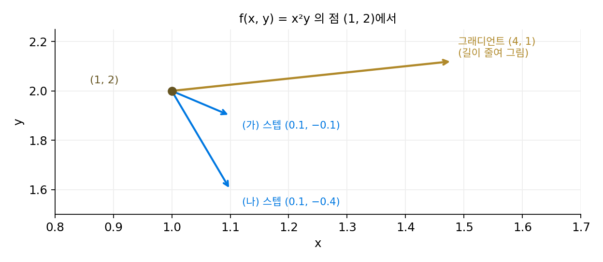
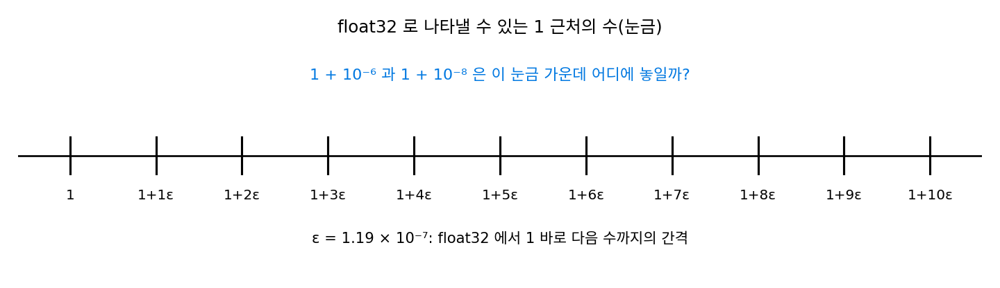

테일러 전개: 0·1·2차 근사의 사다리
이 장의 물음
파이토치로 학습 코드를 짜면 한 스텝은 늘 같은 세 줄이다. loss = criterion(model(x), y)로 지금 파라미터에서 손실 값을 하나 재고, loss.backward()로 그래디언트를 채우고, optimizer.step()으로 파라미터를 옮긴다. 옵티마이저가 손에 쥔 것은 지금 서 있는 한 점에서 잰 숫자들뿐이다. 손실이 0.69이고, 어느 쪽으로 가면 얼마나 빨리 줄어드는지. 조금 떨어진 곳의 손실은 직접 재 보기 전에는 모르는데도, 옵티마이저는 스텝마다 어디로, 얼마나 갈지를 정해야 한다. 한 점에서 잰 숫자만으로 떨어진 곳을 내다보는 일이 어떻게 가능할까?
옵티마이저마다 재는 것도 다르다. 손실 값만 재는 방법이 있고, 그래디언트까지 쓰는 방법이 있고, 손실이 얼마나 휘었는지까지 쓰는 방법이 있다. 더 많이 재면 더 멀리 내다볼 것 같은데, 큰 신경망은 왜 거의 모두 그래디언트까지만 쓸까? 그리고 그래디언트로 내다본 예측은 얼마나 먼 곳까지 믿어도 될까? 학습률을 너무 키우면 학습이 무너지는 일도 예측을 믿을 수 있는 거리와 이어져 있을 것 같다.
이 장은 다음 물음에 차례로 답한다.
- 한 점에서 잰 값과 그래디언트로 조금 떨어진 곳의 손실을 얼마나 맞힐 수 있을까? 틀리는 양은 거리에 따라 어떻게 늘어날까?
- 손실의 바닥(손실이 가장 작은 곳)에서는 그래디언트가 0이다. 그 바닥이 어디 있는지 내다보려면 무엇을 더 재야 할까?
- 미분을 더 많이 하면 얼마든지 먼 곳까지 맞힐 수 있을까?
- 예측을 믿어도 되는 거리는 미리 계산할 수 있을까? 학습률은 그 거리와 어떻게 이어질까?
- 옵티마이저들은 한 점에서 무엇을 재고, 그것을 재는 데 얼마를 치를까?
1차 근사: 그래디언트로 한 스텝 앞을 내다보기
지금 자리의 손실 값 하나만 안다면, 조금 떨어진 곳의 손실은 어떻게 짐작할까? 가장 정직한 대답은 지금 값을 그대로 다음 자리의 예측으로 쓰는 「모르지만 아마 비슷하겠지」다. 이 예측은 어느 방향으로 가도 같은 값을 말하므로, 어디로 가야 손실이 줄어드는지 알려 주지 않는다. 그래디언트(손실이 가장 빨리 커지는 방향과, 그 방향으로 움직일 때 손실이 커지는 비율을 함께 담은 벡터)까지 알면, 오른쪽으로 0.1 가면 손실이 대략 얼마 늘거나 줄지를 말할 수 있다. 그 「대략」은 얼마나 맞고, 멀리 갈수록 얼마나 빨리 틀려 갈까?
역사: 로그표의 칸 사이를 직선으로 메우다
계산기가 없던 시절, 곱셈을 덧셈으로 바꿔 주는 로그는 천문학자와 항해사의 도구였고, 사람들은 계산한 로그 값을 표로 묶어 썼다. 영국의 수학자 헨리 브리그스(Henry Briggs)가 1624년에 펴낸 『로그 산술(Arithmetica Logarithmica)』은 1부터 20,000까지, 그리고 90,000부터 100,000까지의 정수에 대해 상용로그를 소수 열네 자리까지 실었다. 가운데 비어 있던 20,000부터 90,000까지는 네덜란드의 아드리안 블락(Adriaan Vlacq)이 1628년 판에 채웠다. 표에는 정수만 실리므로, 칸 사이에 있는 수의 로그가 필요하면 이웃한 두 칸의 값을 직선으로 이어 근삿값을 구한다. 칸 사이의 짧은 곡선을 직선으로 보는 것이다.
이 직선 근사는 얼마나 틀릴까? 정수 n과 n + 1의 한가운데에서 직선이 곡선과 어긋나는 양을 계산하면, n이 1,000일 때 5.4 × 10⁻⁸이고 20,000일 때 1.4 × 10⁻¹⁰이다. 수가 20배 커지자 어긋남이 약 400배(20²배) 준 것은, 로그 곡선이 수가 클수록 펴져서 같은 한 칸 안에서도 직선과 덜 벌어지기 때문이다. 직선 근사의 어긋남은 곡선이 얼마나 휘었는지와 칸이 얼마나 넓은지 두 가지로 정해진다. 이 절은 이 관찰을 식으로 옮긴다.


칸 사이를 직선으로 잇는 거면 지금은 1초면 끝나죠. 애초에 log 함수를 부르면 되고요.

그 log 함수가 없어서 표를 만든 거예요. 그러면 직선으로 메운 값이 몇째 자리까지 맞는지, 표를 쓰던 사람은 어떻게 알았을까요?

음, 오차를 재려면 참값이 있어야 하는데, 참값을 모르니까 표를 쓰는 거잖아요. 이웃한 칸 몇 개를 맞대 보는 수밖에 없었을 것 같아요.

반은 맞혔어요. 기록으로 남은 방법은 이웃한 칸끼리의 차이를 늘어놓고, 그 차이의 차이까지 쓰는 거예요. 브리그스가 『로그 산술』 머리말에 칸 사이를 비례로 나누는 법과 함께 적어 두었어요. 표를 쓰던 사람들이 하나하나 그렇게 확인했는지는 기록이 없으니 짐작이고요.
차이의 차이가 작으면 곡선이 덜 휜 거니까, 직선으로 메워도 된다는 거네요.
그런데 그 휜 정도를 부를 말이 1624년에는 없었어요. 미적분이 아직 없었거든요. 뉴턴과 라이프니츠보다 앞선 때로, 뉴턴이 태어나기 18년 전이에요.

아, 그러면 n이 20배 커지면 어긋남이 400배 준다는 것도 2차 미분으로 설명할 수는 없었겠네요. 지금 우리는 미분 한 번으로 계산하는 걸요.

직선 근사의 어긋남이 칸의 너비와 곡선이 휜 정도로 정해진다면, 그래디언트로 그은 직선의 오차 식에는 휜 정도를 나타내는 무엇이 들어가야 해요?
계산기 없이 ln 1.1 근삿값 구하기
로그표 대신 손실 함수에서 직선 근사를 해 보자. 예제로는 ln(1 + x)를 고르는데, 분류 신경망의 손실인 크로스 엔트로피가 −ln p 꼴의 로그라서 ML 손실이 휘어 있는 모양의 대표이고, x = 0에서 값과 그래디언트를 암산으로 구할 수 있고, 계산기로 참값을 바로 확인할 수 있기 때문이다. 근사의 기준으로 삼는 점을 전개점이라 부르고 a로 적자. 전개점 a = 0에서 값은 f(0) = ln 1 = 0이고, 그래디언트는 f′(x) = 1/(1 + x)에서 f′(0) = 1이다.
값만 쓰는 예측은 f(h) ≈ 0이다. 그래디언트까지 쓰면 「1만큼 가면 1만큼 오른다」는 직선으로 f(h) ≈ 0 + 1 × h = h를 얻는다. 그러면 ln 1.1 ≈ 0.1인데, 계산기로는 0.095310이니 0.004690만큼 크게 근사했다. 스텝 h를 바꿔 가며 두 예측의 오차를 재면 다음과 같다.
| 스텝 h | 참값 ln(1 + h) | 값만 쓴 예측 0의 오차 | 그래디언트까지 쓴 예측 h의 오차 |
|---|---|---|---|
| 0.01 | 0.009950 | 0.009950 | 0.000050 |
| 0.1 | 0.095310 | 0.095310 | 0.004690 |
| 0.5 | 0.405465 | 0.405465 | 0.094535 |
| 1 | 0.693147 | 0.693147 | 0.306853 |
스텝을 0.1에서 0.01로 10배 줄이면, 값만 쓴 예측의 오차는 9.58배 줄고 그래디언트까지 쓴 예측의 오차는 94.42배 준다. 그래디언트까지 쓴 예측의 오차는 거의 h²/2다(h = 0.1이면 0.005, 실제 0.004690). 스텝을 반으로 줄이면 오차는 4분의 1로 준다. 오차가 늘 같은 방향(예측이 참값보다 큼)인 것도 눈여겨보자. ln(1 + x)는 위로 볼록하게 휘어서, 전개점에서 그은 직선보다 늘 아래에 있다.
지금 자리의 값과 그래디언트만으로 떨어진 곳의 손실을 직선으로 예측하는 것을 1차 근사 (접선으로 내다보기 / first-order approximation)라 한다. 스텝 h의 1제곱까지 쓰기 때문에 붙은 이름이고, 같은 뜻으로 값만 쓰는 예측은 0차 근사라 부른다.
파라미터가 여럿이면 파라미터 벡터 θ(세타)를 옮기는 스텝도 벡터 Δθ(델타 세타)가 되고, 그래디언트 ∇𝓛(∇는 나블라라고 읽는다)와 스텝의 내적, 곧 파라미터마다 (그 방향의 그래디언트 성분) × (그 방향으로 옮긴 양)을 모두 더한 것이 1차 근사의 변화량이다.

넷코드의 데드 레커닝: 상대 캐릭터를 직선으로 내다보기
온라인 대전 게임에서 달리던 상대 캐릭터가 갑자기 몇 걸음 뒤로 튀어 돌아가는 장면을 본 적이 있을지 모른다. 그 튐 뒤에도 방금 본 1차 근사가 있다. 이번에는 스텝이 거리가 아니라 시간이고, 그래디언트 자리에 속도가 들어간다.
상대 캐릭터의 위치는 서버를 거쳐 늦게 도착해서, 지연이 100 ms이면 지금 받은 패킷은 100 ms 전의 위치를 말한다. 받은 위치를 그대로 그리면 초속 6 m로 달리는 상대는 화면에서 늘 6 × 0.1 = 0.6 m 뒤처져 보인다. 그래서 넷코드(네트워크로 게임 상태를 주고받는 코드)는 위치와 함께 속도도 실어 보내고, 화면에는 「마지막으로 받은 위치 + 속도 × 지난 시간」을 그린다. 값 + 그래디언트 × 스텝이라는 1차 근사의 꼴로, 손실 대신 위치를 내다보는 것이다. 이 계산법을 데드 레커닝(dead reckoning)이라 부른다. 1980년대 미군이 전차 시뮬레이터 여러 대를 네트워크로 묶은 SIMNET이 이 방법을 썼고, 분산 시뮬레이션 표준 DIS(IEEE 1278)의 데드 레커닝 계산법이 그 방법을 바탕으로 만들어졌다고 전한다. 이름은 옛 항해에서 왔다. 항해사는 마지막으로 확인한 배의 위치에 속력과 나침반 방향으로 셈한 이동 거리를 더해 지금 위치를 짐작했고, 이를 추측 항법이라 했다.
캐릭터의 위치를 시간 t의 함수로 보면, 패킷이 실어 온 위치는 전개점의 값 f(a), 속도는 그래디언트 f′(a), 패킷이 실어 온 위치의 시각부터 지난 시간(지연 + 패킷을 받은 뒤 지난 시간)이 스텝 h다. 데드 레커닝은 1차 근사 f(a + h) ≈ f(a) + f′(a)h와 같은 식이다. 상대가 곧게, 같은 속력으로 달리면 위치가 시간의 직선이라 이 예측은 조금도 틀리지 않는다. 가속도 4 m/s²로 빨라지는 중이라면 100 ms 뒤 화면과 실제 위치의 어긋남은 ½ × 4 × 0.1² = 2 cm, 200 ms 뒤에는 8 cm다. ln(1 + x)의 1차 근사처럼, 어긋남이 지난 시간의 제곱으로 자란다.
1차 근사가 깨지는 장면도 게임에서 본다. 상대가 오른쪽으로 초속 6 m로 달리다가 t = 1.0초부터 0.2초 동안 가속도 −60 m/s²로 브레이크를 밟듯 되돌아서서, 속도가 +6 m/s에서 −6 m/s로 바뀐다고 하자. 1.0초에 보낸 패킷(위치 6 m, 속도 +6 m/s)으로 그린 화면은 100 ms 뒤 6.6 m를 가리키는데, 실제 캐릭터는 6.3 m에서 멈춰 서는 중이라 30 cm 어긋난다. 패킷이 0.05초마다 온다면 다음 패킷이 도착하기 직전(150 ms 뒤)에는 어긋남이 67.5 cm까지 벌어지고, 새 패킷이 도착하는 순간 화면의 캐릭터가 37.5 cm 뒤로 튄다. 이런 보정이 패킷마다 네 번 되풀이된 뒤, 다시 곧게 달리기 시작한 1.2초의 패킷이 도착하는 1.3초부터 화면과 실제가 다시 겹친다. 플레이어가 「상대가 순간이동했다」고 느끼는 그 순간이 1차 근사가 깨지는 자리다.

어긋난 30 cm와 67.5 cm는 ½ × 60 × 0.1² = 0.3 m, ½ × 60 × 0.15² = 0.675 m와 같다. 1차 근사가 버린 것은 가속도, 위치를 시간으로 두 번 미분한 값이 만드는 ½f″(a)h² 항이다. 그래서 DIS 표준을 소개하는 자료와 그 표준을 따른 공개 구현(Open-DIS)에는 가속도까지 실어 보내 2차로 내다보는 계산법도 있다. 다만 되돌아서기 시작하는 순간처럼 가속도마저 갑자기 바뀌면 2차로 내다본 예측도 틀린다. 그 대신 캐릭터가 낼 수 있는 가장 큰 가속도를 알면, 어긋남이 ½ × (가장 큰 가속도) × h²를 넘지 않는다고 미리 말할 수 있다. 여기서 h는 지연만이 아니라 패킷이 실어 온 위치의 시각부터 지난 시간이라, 패킷을 받은 뒤 시간이 흐를수록 커진다. 가장 큰 가속도가 60 m/s²이면 패킷이 도착하는 순간(h = 100 ms) 30 cm, 다음 패킷이 오기 직전(h = 150 ms) 67.5 cm로, 그림의 어긋남과 같다. 버린 항의 크기에 상한을 두는 이 생각을 식으로 세우는 일은 나머지항이라는 개념이 맡는다.
ML에서: 경사하강은 1차 근사를 믿고 걷는다
그래디언트 반대쪽으로 그래디언트에 학습률 η(에타)를 곱한 만큼 옮기는 경사하강의 한 스텝 Δθ = −η∇𝓛를 1차 근사에 넣으면, 손실이 ∇𝓛·(η∇𝓛) = η|∇𝓛|²만큼 준다고 예측된다. 같은 스텝 길이라면 이 예측 감소가 가장 큰 방향이 그래디언트 반대쪽이므로, 경사하강을 「가장 가파른 내리막」이라 부르는 것은 1차 근사 안에서 하는 말이다.
입력이 둘이고 샘플이 200개인 로지스틱 회귀(분류 손실을 쓰는 가장 작은 선형 모델. 데이터는 씨앗을 고정해 만들었다)에서 파라미터 0을 출발점으로 이 예측을 실제와 맞대 보자. 출발점의 손실은 0.6931이고 |∇𝓛|² = 0.1075다. 학습률 0.1이면 1차 근사가 예측한 감소는 0.01075, 실제 감소는 0.01062로 98.8%가 맞는다. 학습률 1이면 예측 0.1075에 실제 0.0950으로 88.4%만 맞으니, 스텝이 열 배 길어지자 예측이 실제에서 눈에 띄게 벗어나기 시작했다. 어디까지가 믿을 만한 스텝인지는 1차 근사가 버린 항의 크기를 따져야 답할 수 있고, 그 계산은 나머지항이라는 개념으로 한다.
문제 1. 출발하는 자동차의 위치 근사
정지해 있던 자동차가 매초 속도가 2 m/s씩 붙으며 출발했다. 출발 뒤 t초에 자동차는 출발점에서 t² m 떨어져 있으므로, 5초 뒤에는 25 m 지점을 속도 10 m/s로 지나고 있다. (가) 지금 속도 그대로 간다고 보고 1초 뒤, 2초 뒤의 위치를 근사하라. 실제 위치와는 몇 m 다른가? (나) 10초 뒤의 근삿값은 몇 m 틀리는가? (다) 근사하는 시간을 10배 늘리면 틀리는 양은 몇 배가 되는가?

1초 뒤는 25 + 10 = 35 m인데 실제는 6² = 36 m라서 1 m 틀려요. 2초 뒤는 45 m와 49 m로 4 m고요.
10초 뒤는요?

근삿값은 25 + 100 = 125 m, 실제는 15² = 225 m요. 100 m나 틀려요! 5초 뒤는 75 m와 100 m로 25 m고요. 1, 4, 25, 100이에요.
틀린 양이 시간의 제곱이네. (5 + h)²을 풀면 25 + 10h + h²이잖아. 25 + 10h가 지금 속도로 간다는 근사이고, 남는 게 h²이야.
그 h²은 어디서 왔을까요? 지금 속도 10 m/s를 쓴 근사가 놓친 것이 무엇인지 보세요.
속도가 매초 2씩 붙는다는 거요. 가속도 때문에 더 간 거리가 ½ × 2 × h² = h²이니까, 서연이가 풀어 쓴 식에서 남은 그 h²이에요.
그럼 (다)는 10배가 아니라 100배야. 지금 속도만 쓰는 예측은 1차 근사이고, 그 오차는 시간의 제곱으로 커지는 거지.
게임 화면의 데드 레커닝도 지금 속도로 간다고 보는 1차 근사예요. 지연이 100 ms인데 상대 캐릭터가 가속도 4 m/s²로 빨라지고 있으면 화면은 2 cm 어긋나요. 지연이 200 ms인 서버에서는요?

지연이 두 배니까… 2 cm의 두 배는 아니겠네요. ½ × 4 × 0.2²을 하면 8 cm, 네 배예요.

이 자동차를 레이싱 게임 화면에 데드 레커닝으로 그리면, 출발하는 차는 늘 가속하니까 화면 속 차가 실제보다 뒤에 그려지겠네. 가속도가 2 m/s²이니까 지연 100 ms면 ½ × 2 × 0.1² = 1 cm 뒤처지고, 새 패킷이 오면 앞으로 튀겠어.
문제 2. 1차 근사가 0이라고 말하는 스텝
함수 f(x, y) = x²y의 점 (1, 2)에서 그래디언트는 (2xy, x²) = (4, 1)이다. (가) 스텝 (0.1, −0.1)에 대해 1차 근사가 예측하는 변화와 실제 변화를 구하라. (나) 스텝 (0.1, −0.4)는 1차 근사로 얼마나 변한다고 예측되는가? 실제 변화는? (다) (나)의 스텝을 (0.01, −0.04)로 10배 줄이면 실제 변화는 몇 배 줄어드는가?

(가)는 4 × 0.1 + 1 × (−0.1) = 0.3이고, 실제로는 1.1² × 1.9 − 2 = 0.299야. 거의 맞아.
(나)는 4 × 0.1 + 1 × (−0.4) = 0이니까 변하지 않아요. 그래디언트와 수직인 스텝이에요.
실제 값도 계산해 볼까요?
1.1² × 1.6 = 1.936이라서 0.064만큼 줄었어요. 0이라더니 줄었네요. 반대 스텝 (−0.1, 0.4)로 가 봐도 0.9² × 2.4 = 1.944라서 0.056만큼 줄어요. 양쪽 다 줄어요.

1차 근사라면 반대로 가면 부호가 바뀌어야 하잖아. 양쪽 다 준다는 건 1차가 아닌 무언가가 남았다는 뜻이야. (다)를 해 보면 스텝을 10배 줄였을 때 변화가 −0.064에서 −0.000604로 106배 줄어. 거의 100배니까 스텝의 제곱에 비례하는 양이네.

그래요. 그래디언트와 수직인 방향에서는 1차 항이 0이라, 그다음 항이 변화를 정해요. 그 항은 무엇이 정할까요?

스텝의 제곱에 비례하니까 함수가 그 방향으로 얼마나 휘었는지가 정하겠죠. 1차 근사가 0이라고 말해도 실제로 아무 일이 없다는 뜻은 아니네요. 해석학에서 극값의 후보는 미분이 0인 곳에서 찾지만, 극대인지 극소인지는 거기서 끝나지 않던 것과 같아요.

등고선을 따라 걸으면 높이가 안 변한다고 배웠는데, 곧은 직선으로 걸으면 휜 등고선에서 벗어나니까 결국 높이가 변하는 거군요.
문제 3. float32 로 계산한 ln(1 + 0.000001)
이진 분류 손실을 계산하다 보면 아주 작은 x에서 ln(1 + x)를 구할 일이 생긴다. 신경망은 보통 float32(32비트 실수)로 계산하고, float32에서 1 바로 다음 수는 1과 1.19 × 10⁻⁷만큼 떨어져 있다. (가) x = 10⁻⁶일 때 float32로 1 + x를 먼저 만들고 로그를 취하면 얼마가 나오는가? 참값 9.999995 × 10⁻⁷과 견줘라. (나) 1차 근사 ln(1 + x) ≈ x로는? (다) x = 10⁻⁸이면 두 방법은 각각 무엇을 내는가?

컴퓨터가 로그를 틀릴 리 없죠. torch.log(1 + x)로 하면 돼요. 돌려 보니… 9.536739 × 10⁻⁷이요? 참값보다 4.6%나 작아요.
로그를 취하기 전에, float32로 만든 1 + 10⁻⁶은 정확히 1.000001일까요?
아, 1 근처에서는 수가 1.19 × 10⁻⁷ 간격으로만 있으니까 1.000001은 가장 가까운 칸으로 반올림돼요. 로그는 정확한데 넣은 수가 이미 틀렸어요. x = 10⁻⁸이면 1 + x가 그냥 1이 돼서 로그가 0이에요.
1차 근사 x는 10⁻⁶을 그대로 내니까 상대 오차가 x²/2를 x로 나눈 5 × 10⁻⁷밖에 안 돼. 10⁻⁸에서는 더 작고. 「정확한 식」보다 「근사」가 더 정확하네.
파이토치에는 torch.log1p라는 함수가 따로 있어요. 1 + x를 만들지 않고 ln(1 + x)를 계산하도록 만든 함수예요. 10⁻⁶에 넣으면 9.999995 × 10⁻⁷, 10⁻⁸에 넣으면 1.000000 × 10⁻⁸을 내요. 왜 이런 함수가 필요했을까요?
작은 x에서 ln(1 + x)는 x와 거의 같은데, 1 + x를 만드는 순간 x의 아랫자리가 반올림으로 사라지니까요. x가 그만큼 작을 때는 1차 근사가 가르쳐 주는 대로 x를 직접 다뤄야 정보가 남아요.
이진 크로스 엔트로피를 직접 짜지 말고 라이브러리의 BCEWithLogitsLoss를 쓰라는 말이 그래서였구나.